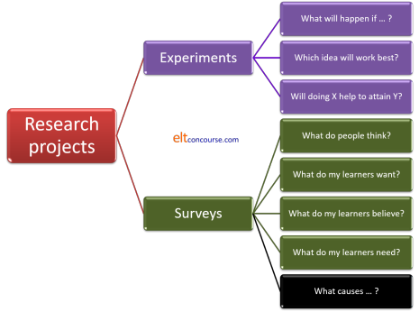
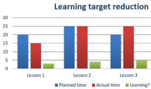
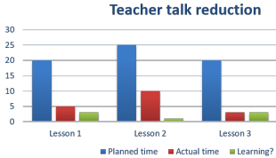
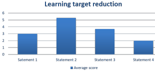
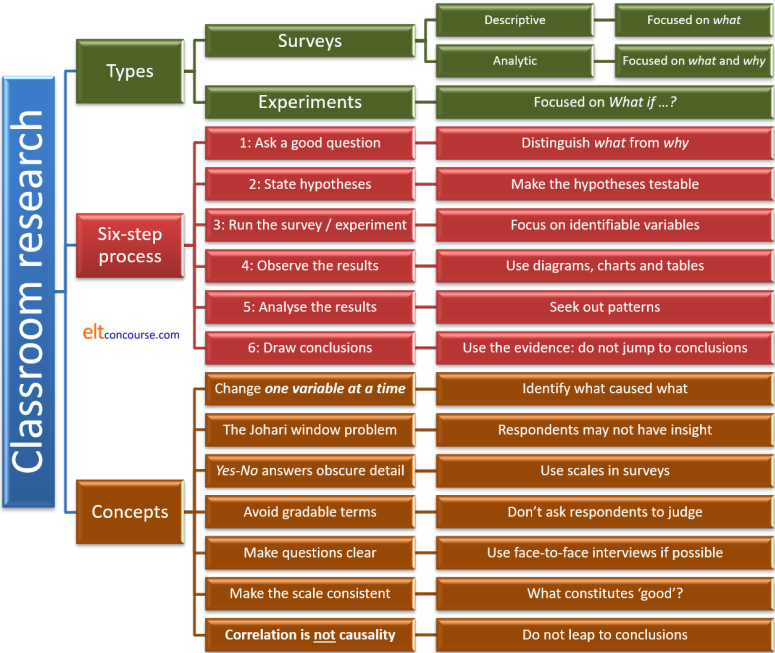

Doing classroom research: a short course
This guide is about finding things out for yourself.
It is part of the Teacher development section of the site but is
linked from numerous other areas and guides because, sooner or
later, most teachers start to become curious about what works best
for them and their students and what their learners feel about the
service they are receiving.
One can, naturally, read books about methodology and teaching
techniques, procedures and approaches or take a teacher training
course at an appropriate level and many of these resources will
focus on what someone else thinks constitutes best and most
efficient practice.
There is no harm in relying on the wisdom of others in this respect
and most of us will do so at many points in a teaching career.
However, by their nature, these resources will not apply
specifically to you, your learners or your and their aims so they will, at
best, be generic responses to questions such as:
How do I motivate
my learners?
What types of tasks appeal most and work best in the
classroom?
How do I ensure that my learners are getting what they need
as well as what they want?
How can I best prepare my learners to use the English they need
in their lives?
Why are my learners
unhappy?
and so on.
 |
The starting point: what do you want to find out? |
This seems such an obvious question that it's hardly worth taking
the time to spell things out but it is surprising how often
otherwise good research projects end up being worthless because too
little thought is given at the outset to what the project is for
and, indeed, what type of project it is.
There are choices to be made and they fall into two main categories,
like this, with the right-hand column containing examples of the kinds
of questions to ask:

To explain a little:
- Experiments
- are designed to find out What happens if ... . In other words, they are designed to examine causes and effects and make some kind of measurement of outcomes.
- Surveys
- come in two sorts (hence the change of colour for the last
box in the diagram):
- Descriptive surveys include the first four examples and they are concerned with what not why or how.
- Analytic surveys relate to the last example and, while they are also concerned with what, they are simultaneously focused on why and how.
 |
Six-step research methodology |
Whether you are setting out to conduct an experiment or a survey of some kind, you need to follow a simple procedure. There is nothing immensely time consuming or complicated about this but it is as well to set it out clearly. Like this:
 Ask
the question (see above for some examples)
Ask
the question (see above for some examples)
You need to make sure that the question is answerable in less than a
few decades so do not ask:
How can I teach
better?
but prefer something a little less ambitious such as:
Can I teach grammar
more interestingly?
What do my learners feel about the correction techniques I
use?
Which of two possible procedures will work best for this
target?
etc.
 Hypothesise
an answer to the question
Hypothesise
an answer to the question
If you don't do this, then you will be stabbing in the dark.
For example, if you want to answer a question like:
Will a
Test-Teach-Test approach appeal to this group of learners?
then your hypothesis will be either:
A
Test-Teach-Test approach will appeal to this group of learners
or
A
test-Teach-Test approach will not appeal to this group of learners.
Then, when you gather results, you can see clearly which hypothesis
the results support.
Hypotheses must be testable statements. That
is to say, they must be disprovable.
 The
experiment or the survey
The
experiment or the survey
This is the heart of the project, of course, and needs to be very
carefully designed bearing Steps 1 and 2 in mind. More on this
below.
 Observe
the outcomes
Observe
the outcomes
For an experiment, this involves looking at the result. For a
survey, this involves assembling the data.
Many people find that assembling the data graphically is helpful
because it is often easier to see patterns in graphics (and making
the graphic often exposes them) than seeing patterns in columns of
figures.
 Analysis
of outcomes
Analysis
of outcomes
If the experiment or survey has been well designed, this will be
easy. If it hasn't, it will be impossible because the data
will be dirty and the outcomes unclear.
 Draw
conclusions
Draw
conclusions
Go back to step 2.
Are the hypotheses supported or
refuted?
Take them one by one.
 |
Aims |
You can see from the example questions above that experiments and surveys have different aims. Now, then, is the time to ask yourself a few specific questions. On the answers will depend everything that follows. The questions are:
- Do I want to find out what happens if I change something in my classroom?
- Do I want to find out how well a new approach that I am using is working?
- Do I want to find out whether I can change something I currently do to make it more effective?
- Do I want to know what my learners think?
- Do I want to find out what my learners want to learn?
- Do I want to find out whether something I currently do is effective?
- Do I want to see how my learners' attitudes to what they do affect how well they learn?
  |
Task: Look at the questions again and write a yes or no answer to each one on a bit of paper. Click |
Here are some comments:
- If you answered yes to question 1., you are going to carry out an explicit, simple experiment. You only have one question to answer but, as we shall see, the experiment has to be very carefully designed or you won't get a useful answer.
- If you answered yes to question 2., you are already doing an experiment. Now what you need to do is look at the experiment itself to see if it is likely to give you some clean data from which to assess how well the new approach is working.
- If you answered yes to question 3., you are also carrying out an experiment but the target is you, not the learners.
- If you answered yes to questions 4., 5. and/or 6., then you are not interested in why or how: you are interested in what so you are conducting a descriptive survey.
- If you answered yes to question 7., you are involved in something quite complex, an analytic survey, because the endeavour is to use the survey results to establish not only the facts but the direction and strength of the causation between factors.
We will take the areas individually in this guide but it should be remembered that we are not dealing with wholly watertight categories.
- Some approaches to classroom research will target more than one question.
- Some research will start with a survey the results of which may inspire an experiment.
- Some research will start with an experiment and then use a survey to find out how well it worked.
Nevertheless, thinking now about the sort of research you are concerned with will save a great deal of time and heartache later.
 |
Experiments |
We will start with experiments because they often lead on to
surveys or are the next logical step in a survey.
An experiment is an attempt to manipulate a single variable or set
of very closely related variables to try to see what causal effects
the variables have on results.
 |
An example |
If the torch you use to find your way around in the dark has stopped working, you can carry out an experiment to ascertain why this should be. So, you proceed as we saw above in a 6-step process:
- Ask the question:
Why has the torch stopped working? - Hypothesise answers:
- The torch has stopped working because the battery is exhausted. This is variable No 1.
- The torch has stopped working because the bulb has died. This is variable No 2.
- Experiment:
Change the battery for a new one. - Observe:
Does the torch now work? - Analyse:
Does the torch now work as well as it did before or not at all? - Conclude:
- Yes, it works: hypothesis a. is confirmed.
- No, it doesn't work: hypothesis b. needs confirming or refuting so now we
re-insert the old battery, change the bulb and repeat the
observation.
If the torch now works, we know that hypothesis b. is supported.
If it doesn't, we need to look for variable No 3.
|
|
Task: Why did we re-insert the old battery in step 6b? Click |
Because
in any experiment, we need to manipulate only
one variable at a time. If we simultaneously change
the battery and the bulb, we will never know which action had the
effect.
The moral in the story is that we should try as
far as possible to keep everything the same except the
variable whose effects we want to observe.
In our professional context, of course, we are dealing with something very much more complex than a torch. We are dealing with people and therein lies our problem: people are inherently variable.
 |
A teaching example |
Let's say, for the sake of this example, that we are setting out
to discover why the vocabulary that we are teaching has not been
retained as well as it should be by the learners in a particular group.
We know this is the case because we run weekly progress tests which
include a test of the vocabulary to which the learners have been
exposed.
Results for the vocabulary part of the test have been consistently
disappointing.
At the moment we do these things in terms of teaching vocabulary:
- We encourage learners to keep a vocabulary notebook in which they write a short sentence or clause to set the lexeme within some co-text.
- We get the learners to translate the new words into their L1.
- We always introduce new vocabulary in a written text so the learners can see it in context.
- We run a topic-based syllabus so all the vocabulary for the week is in the same general lexical field.
Now we
want to try something new so we can introduce a new phase and,
for this experiment, we want to see if forcing the learners to use
all the new vocabulary from a day's lessons in a short piece of
written work will help to move the items from the short- to the
long-term memory.
We must be very careful to keep the four elements above constant
because we only want to see the results of a new procedure.
If we take out one of the things we already do or add in
something else, we will never
know whether removing that element or introducing a new one
has the effects (if any) that we observe.
So here are our six steps:
- Ask:
Why is vocabulary not being adequately learned? - Hypothesise:
Vocabulary is not being retained because we have failed to provide a task to incorporate new lexis in a piece of written work. - Experiment:
Provide such a task for each day's lessons for a week. - Observe:
When we test the learners on this week's work, is there any change in the results? - Analyse:
Are the learners better or worse at retaining the items? - Conclude:
- The learners are better at retaining the items. Our hypothesis is confirmed and we should continue with this procedure.
- The learners are worse or no better at retaining the items. Our hypothesis is refuted.
Notice that even if conclusion 6b. is the outcome, the experiment
hasn't failed because we have shown that the effect is non-existent
so we can devote that amount of teaching and learning time to something else.
What this means is that we have to think of another way that
vocabulary retention might be enhanced, implement it and run the
experiment again.
 |
A little scepticism is called for |
|
|
Task: Can you see how this experiment might be flawed? What other variables might be in play? Click |
We need to consider at least these factors:
- Was the difficulty of the lexis introduced during the
experiment the same as in preceding weeks?
If it was easier or more difficult, then the results may depend on the level of difficulty and have nothing to do with the written task. - Did we keep the four elements we started with,
add another or skip
one?
If we did, then we have two variables in play and we don't know which was causal. If, for example, we departed from our topic-based syllabus and introduced items from an unconnected lexical field that might have made the items more difficult to retain. Alternatively, it may have made them easier because of the novelty aspect. - Was the class the same?
If new learners have arrived and / or others left, then the groups are not comparable. For the purposes of this experiment, although we only have one group of learners, we can visualise them as two groups: the group in the control week (before the innovation) and the group in the experimental week (after the innovation). - Was the reading text in which we set the lexis of
comparable difficulty?
If it was more difficult, then new vocabulary in it will have a more serious blocking effect. If it was easier, the cognitive load on trying to understand the text as well as noticing the new vocabulary is made somewhat smaller. - Was the text equally interesting and engaging for the
learners?
The more motivating, relevant and engaging the text is, the more likely learners are to focus on the vocabulary items in it because they want to understand. On the other hand, if a text is of little interest to the learners, they are unlikely to engage with the content so assiduously. - Were the vocabulary items equally useful (or perceived
as such by the learners) across the weeks?
One technical terms for this factor is the learners' perception of the affordances that the lexis presents.
Affordances are the uses to which we feel something can be put. For example, you may see a door handle as a tool for opening a door but you may also see it as a place to hang your jacket. Both purposes are affordances offered by the door handle.
If the learners had perceived that the items encountered during this experiment were more or less useful than usual, that may have affected how motivated they were to acquire them. - Were the vocabulary items of the same word
classes?
Some people find learning nouns to which they can attach mental pictures easier than learning items in other word classes and some find verbs very challenging to learn because there are grammatical elements, such as transitivity and adverbial use, to bear in mind.
Collocation is also an issue. - Was the test we administered of the same kind, conducted
at the same time of day in the same circumstances and at the
same level of difficulty?
Was it marked in the same way?
If it wasn't, then its reliability is compromised. In that case, because it is the only measure of outcomes, the whole experiment is compromised. - Was the teaching and learning load comparable?
If the week in which we conducted the experiment was not typical of all weeks on a course, it may be that learner tiredness (or freshness) played a part and we may also find that the teachers' commitment and energy levels may have had some effect. Unless we have a way of measuring or at least estimating these factors, we just don't know. - Was the novelty of being asked to write a piece of text
incorporating the items a factor?
If learners have never been asked to do this before, the mere fact they are asked may result in heightened levels of motivation and effort because they may feel that this has quite suddenly become a critical factor in their learning and assessment.
This effect may be exactly what we have aimed for and has resulted in better retention but we know that novelty soon wears off so we need to monitor whether the effect has been sustained.
These are, of course, things that should have been borne in mind before we
undertook the experiment so thinking back from the possible outcomes
to the design of the experiment is often a useful technique.
As we said, the problem we have with classroom experimentation is
that variables are multiple and it is difficult, some say
impossible, to factor them all in or out of the equation.
However, we can try.
|
|
Task: Can you suggest how the effects of problems we have set out here can be minimised? Here is the list again. Please think a little before you click on the |
|
Difficulty level |
If we are trying to compare the retention of items we are
teaching, we need to be careful to keep the difficulty level
roughly (it can never be exactly) the same. This involves
looking at factors such as irregularity of spelling,
length of words, whether there are cognates in our
learners' first language(s) and so on. We also
need to consider whether the words represent conceptual
challenges for our learners.
|
|
Current practice |
If we are changing something, we need to make sure we only
change one thing at a time (the battery or the bulb) so we can
be surer that the element we have changed has had the effect we
observed.
We need to be careful to maintain the four elements of our usual practice. |
|
The learners |
If new learners have arrived and others have left we need to do
two things to exclude this variable:
|
|
Text difficulty |
As for the first issue, we need to make sure that we are not including
a text which is an outlier in terms of difficulty in relation to
the texts we usually use. We can run any texts we use
through a word processing programme which will
automatically calculate the Flesch reading difficulty
numbers. This will tell us what level of reading
ease the text is at, the number of sentences per
paragraph and the number of words per sentence. It
will also help us with the level of difficulty of the
lexis by recording the average number of characters per
word in the text.
If we keep the numbers more or less constant, we have excluded this variable. |
|
Engagement |
We should be careful to ensure that the new text we use for the
experiment is comparable in terms of topic and interest for the
learners with the texts we usually use.
This is not as easy a variable to measure as reading ease but we can look at the topics of previous texts and choose something which is neither obviously very different in nature (style, register etc.) nor a repetition of something we have already used. |
|
Affordances |
In this case, affordance refers to the usefulness the learners perceive that the
items have for them. If the vocabulary we are using for
the experiment is obviously more or less useful for our learners
(i.e., is either an item which can be used in multiple settings
or one confined to unusual circumstances) then the results might be skewed by the learners' perceptions.
We can exclude this factor by looking at the words we are introducing and comparing their style and any register restrictions to previous items. |
|
Word class |
We should carry out a short analysis of the vocabulary items we
have already taught on the course and classify it by word class
so we can keep roughly the same ratios of each class in the
experiment. For example, if, up to now, 50% of the new
items have been nouns, 20% verbs, 10% adjectives and so on, we should ensure that this continues to
be the case.
|
|
Testing |
In many experiments, outcomes are measured via some kind of test
with results compared to previous tests. We should be
careful to make sure that the types of test items and the level
of difficulty as well as the strictness of marking are kept the
same. In particular, we should be careful not to introduce
any new criteria (such as penalties for misspelling words) or
removing previously used marking criteria.
|
|
Load |
The experiment should, as far as possible, be undertaken at a
similar point in the course where we can be satisfied that
tiredness or alertness (for either the learners or the teachers) is not a
significant factor.
|
|
Long-term validity |
We should check back a few weeks later to see if the retention
levels are maintained. If they are not, then we may be
able to conclude that novelty was the most
important factor and the type of task we set was irrelevant.
|
It's not at all easy to achieve all these solutions to the possible issues but it may be the case that we can dismiss most of them quite easily and that allows us to focus only on the important ones.
 |
Experimental fallacy #1Post hoc ergo propter hoc
|
The Latin above is often referred to as the post-hoc
fallacy. Just because something is associated
with something else, that does not necessarily lead to the
conclusion that the relationship is causal.
It has often been noted that it rains more frequently at the weekend
than during the working week. That does not mean that the
names we give to days of the week affect the weather directly.
We shall meet this fallacy again when we look at the attempt to
carry out analytical surveys.
We may, through this little experiment, have discovered that
setting a piece of written work has been associated with better
retention of vocabulary items but we cannot be absolutely sure that
we have discovered causality because association is not evidence in
itself of causality. It may be the case, for example, that
any new task
would have had the same effect and it was the novelty value that
caused the increase in commitment to learning.
There are ten factors above (and you may have thought of more) that
may have intervened to muddy the results of this experiment so we
should be careful not to jump to conclusions.
It has been pointed out (see https://upload.wikimedia.org/wikipedia/commons/d/de/PiratesVsTemp%28en%29.svg
for example) that we can plot global average temperatures against
the number of pirates preying on the world's merchant shipping and
see that as the number of pirates falls, the average global
temperature rises in direct proportion.
That does not mean that more pirates keep the planet cool.
Experimental fallacy #2Generalising from the particular |
We may, if we have been careful to exclude all the complicating
factors and variables we can't control, have discovered something
useful about this group of learners. It may be tempting to
make a leap and suggest that instituting a task which forces
learners to embed newly encountered lexis in self-produced written texts
will generally result in better vocabulary retention for all
learners everywhere.
Such a leap would be unfounded and perilous because we cannot make a
generalisation of this sort without a great deal more evidence.
We can, and often do, make assumptions about small groups based on
what we know about many groups in general but to work the other way
and generalise about large numbers from small numbers is not a
defensible procedure.
Were it, for example, to be found that the same results were
obtained from five other groups in the same institution, we may be
justified in suggesting (not claiming) that the task has a
beneficial influence on vocabulary retention for the kinds of
learners taught by the methods employed in that institution.
To generalise further would not be justified by the evidence.
 |
Descriptive surveys |
Descriptive surveys are experiments without the experimental bit.
With an experiment, we set up the factor that we want to investigate
and then see what the outcomes are.
With a descriptive survey, we look at the here-and-now reality and investigate
what it is and how people feel about it.
So, for example, with our little experiment above concerning
vocabulary retention, we could alternatively just introduce a
range of ways to help people retain the items and then ask them
which one(s) helped them to learn the words they need.
Such a survey might be done via a questionnaire like this, for
example:
| In this, please
score each technique from 1 (does not help me at all) to 6
(is extremely helpful) Put a ✓ in one box for each technique only |
|||||||
| # | Technique | 1 | 2 | 3 | 4 | 5 | 6 |
| 1 | Writing a short text containing all the new words | ||||||
| 2 | Using my vocabulary notebook | ||||||
| 3 | Writing the item in a sentence or a clause | ||||||
| 4 | Writing the translation next to the item | ||||||
| 5 | Drawing a picture to remind me of the meaning | ||||||
| 6 | Saying the word aloud many times | ||||||
| 7 | Writing the word many times | ||||||
| 8 | Using the new word whenever I have the chance | ||||||
|
|
Task:
|
Here are some ideas
- If we have a simple alternative such as Yes or
No, the data we get will obscure people who felt
strongly or very strongly one way or another and those who were much
less sure about a response. The answer Yes
will include, therefore, everyone who thought something was
only marginally helpful to those who thought something was
extremely helpful.
Because this questionnaire is about a set of techniques which can be employed often or infrequently or not at all, we need better data to be able to assess the outcomes. - If you have an even number of choices, people cannot simply opt for the middle when they don't know. They are forced to come down (even if only slightly) on one side of the questions or another.
- You may get
- completely honest and objective responses
- responses which the learners think they should believe rather than what they actually believe
- responses which the learners think you want to see
- responses which are random because the learners are not sure what they believe
- responses which are misleading because learners have misunderstood what's required
- Problems:
- learners may not know the answer because they have no way of judging whether a technique is helping them or not. Some of us are better than others at introspecting our own learning behaviour.
- some of the questions contain gradable terms such as short, many times, whenever I have a chance and so on which may be interpreted very differently from respondent to respondent.
- Some of the techniques may not be appropriate in all cases so the responses will depend on what sort of words the learners have in mind because
- it's impossible to represent some items pictorially
- it is very difficult to write a short text containing all the items because they may come from different fields, be in different styles and so on
- what using a vocabulary notebook means is unclear. How are we using it?
- does using the new word mean in writing (so how does it differ from question 1?) or in spoken language, in class or out of class etc.?
- There is only one question so we can't get
any data concerning which technique is helpful for what
sort of words or which technique is easiest to use and
so on.
For example, a learner may believe that writing a short text as a story using a range of newly acquired verbs is very helpful but at the same time believe that doing so with a set of adjectives is completely useless and there is no way that this questionnaire is going to get at that information. It is not even clear how such a learner could respond at all to the first idea. - We have not allowed an exclusion for the cases in which a learner never uses the technique in question so cannot possibly judge how effective it might be for them. To do that, we need to have a further column to tick headed something like I don't do this and then we can exclude those figures when we analyse the responses to the survey.
As you can see, a scaled matrix item like this one needs to be
designed very carefully if it is going to be helpful and it needs to
be administered with a good deal of care.
We could, providing we have the data from the vocabulary tests we
administer weekly, then compare the responses to this survey with
the results from the tests and try to match what people do with how
well they retain the lexis. We still will not have proven any
kind of causality, of course, because it may be the case that people
are doing things which are not very effective but, because they have
good memories, still managing to retain the lexemes well.
More probably, we would use a survey like this to establish what
people currently do as the basis for introducing some
learner-training sessions to extend their repertoire in an effort to
help them learn.
There are ways to overcome the disadvantages.
 |
Problem #1Learners don't always know what they think |
It often requires a good deal of insight into one's own mental
processes to answer questions about what helps you learn. Not
all learners have the skills to do that and, if some in the group
do and others don't, there is going to be a mismatch of data types:
the informed vs. the stab-in-the-dark answer.
This issue is to do with insight and it can be represented like
this:

This sort of diagram was developed by Joseph Luft and Harrington
Ingham to investigate how people see themselves and how others see
them. The name of the technique is a Johari window (derived
from the authors' first names).
The contention is that we all have these four 'rooms' in our minds
which relate to how we want to be seen, how we really are, how
others see us (and we don't) and the subconscious ideas about
ourselves which we are not able to articulate.
The four central areas are described by the 'Things ...' sentences
around them.
For example, the Facade is the area of things that I know about myself
but keep hidden from others. The Blind Spot refers to things that
others see in me which I know nothing about. Insight is our
ability to draw on our unconscious understanding to realise something
about ourselves.
Originally, the technique was used for people to select 6 adjectives
(from a list of 50 or so) to
describe themselves and then their peers were asked to select 6 which
described the subject. Putting these adjectives into the grid, it
is claimed, helps people to see themselves as others see them and be
better able to use insight and introspection. We may choose
adjectives which we feel we want others to ascribe to us but the list may be very different from the list that others who know us
would ascribe to us. That's the difference between the Facade
and the Blind spot.
For our purposes here it stands as a reminder that however carefully a
questionnaire or interview process is designed, it ultimately depends on
people knowing about themselves and, as the window demonstrates, few of
us really do.
Asking a learner, therefore, to be insightful about something as
complex as how they learn may be doomed from the outset because few
of us can answer that question very accurately if at all.
Circumventing the issue is not easy but we can make inroads by discussing with our learners what they think before asking them to complete a questionnaire in the effort to bring some at least of our unconscious feelings into the conscious spheres.
 |
Problem #2Fire or water |
There is often a temptation when surveying people's views to ask
either-or questions because we know that the data we get from such
questions will be very easy to analyse. We simply have to
count the Yes and No answers and compare the
numbers.
Unfortunately, the data are frequently useless because there is no room
for manoeuvre.
Questionnaires, therefore, which work like this are usually almost a
complete waste of everyone's time unless we want the crudest
possible view of a situation, even when we include a third option
like this:
| Please respond by putting a ✓ in the correct box for you | ||||
| # | Technique | Yes | No | ? |
| 1 | This lesson was very useful | |||
| 2 | I learnt a lot of new words | |||
| 3 | I would like to revise the lesson | |||
| 4 | I want more lessons like this | |||
The issues are:
How do you respond if you found the lesson useful but not
very useful?
What does a lot mean? 10, 15, 20 or what?
Does item 4 mean you want all future lessons to be like this
or only some of them and if the latter, what percentage would be
about right?
Only item 3 will give you some usable data because it really is an
either-or response you are looking for. You still need to
decide, however, what percentage of Yes responses would
lead you to planning the revision lesson.
Overcoming this problem is straightforward and it involves using
a scale from a zero response to a maximum response. If we
design the scale rationally, we will be able to capture much finer
grained data than simply Yes, No or Maybe.
We should, of course, not take this too far and have an
over-extended scale in an effort to capture ever-finer data.
Around six for a scale works well but more than that begins to muddy
the water because the gradations are too subtle.
 |
Problem #3Relativity and gradability |
If our questions in any type of questionnaire include
items which are subjectively interpretable, then the data we get may be muddied
by different interpretations.
For example, question items such as:
| Never | Rarely | Sometimes | Often | Frequently | ||
| 1 | How often do you spend time reading through the notes you take in class? | |||||
depend on the learners all having the same understanding of the
adverbs and that is a very uncertain assumption. Native
speakers will often disagree about whether three times a week
represents Often, Frequently or Sometimes and to
expect learners of the language to be more consistent is
unrealistic.
A better item would be:
| Less than once a week | Once or twice a week | Three to five times a week | Five to ten times a week | More than ten times a week | ||
| 1 | How often do you spend time reading through the notes you take in class? | |||||
because that is measurable (but still subject to people actually being able to count how many times they do something with any accuracy). It will not tell us how seriously they do this, unless we ask a supplementary question such as:
| Less than 1 hour a week | Between 1 and 2 hours a week | Between 2 and 5 hours a week | Between 5 and 10 hours a week | More than 10 hours a week | ||
| 2 | How much time do you spend time reading through the notes you take in class? | |||||
and even then, we are relying on people being able to estimate accurately something that they have probably not been actively measuring.
Gradable adjectives are another obvious stumbling block in this
kind of matrix grid questionnaire because everyone's definition of a
short text, a difficult grammar item, a
useful word or an important lesson will be
different.
Asking learners to grade questions which themselves contain gradable
concepts will not provide very useful (or usable) data so it is
better to avoid terms such as difficult altogether and to
define terms such as short carefully.
We can, of course always get the learners to grade the responses in
something like:
| Very easy | Easy | About right | Quite difficult | Very difficult | Impossible | ||
| 1 | I found this lesson ... | ||||||
which is one way forward but even then people's definitions will vary and what is About right for one learner may be Quite difficult for another who is at a lower level or wants to be challenged less. We will not know from the results of this question which is which and we will also not know whether some learners actually prefer lessons which are easy while others like to confront difficult materials.
 |
Problem #4I don't understand the question |
An added complication for us is that we are dealing with people
whose first language is probably not the language in which we are
writing the survey items.
In some situations, this is avoidable because all the subjects of a
survey or experiment have the same first language and in that case,
naturally, we can write the items in the respondents' first language
and avoid any terrible misunderstanding. That's not 100% a
given because people are adept at misinterpreting questions and
statements regardless of the language in which they are written.
We can get around this but it is a time-consuming business and
involves the use of face-to-face interviews to explain the content
of the survey and elicit the result that is fair to the views of the
respondents.
Face-to-face interviews are open to bias and we should be careful to
avoid that by duplicating the written survey as much as possible so
we are not asking open-ended, uninterpretable questions but
eliciting the same evidence that a written survey is intended to
discover.
If our target respondent group is quite small, such an undertaking
is perfectly possible and bias can be further reduced (or, at least,
evened out) if only one person does the interviewing.
It is as well to break down the questions and the possible responses
like this:
How often do
you spend time reading through the notes you take in class?
Do you do this
Less than once a week? (pause for an
answer)
Once or twice a week? (pause for an
answer)
Three to five times a week? (pause
for an answer)
Five to ten times a week? (pause for
an answer)
More than ten times a week? (pause
for an answer)
Even when we think we have the answer right, it's as well to double
check with something like:
So, you spend time
reading through the notes you take in class between 3 and 5 times a
week. Is that correct?
 |
Problem #5What is a 'good' result? |
What's wrong with these survey items?
| Please respond by putting a ✓ in the correct box for you | Very easy | Easy | About right | Quite difficult | Very difficult | Impossible | |
| 1 | The work we do in class is ... | ||||||
| 2 | The materials we use are ... | ||||||
| Very boring | Boring | Not very interesting | Quite interesting | Very interesting | Extremely interesting | ||
| 3 | The texts we use are ... | ||||||
| 4 | The topics of the lessons are ... | ||||||
| Very strongly disagree | Strongly disagree | Disagree | Agree | Strongly agree | Very strongly agree | ||
| 5 | I like working in small groups and pairs. | ||||||
| 6 | I think the homework we do in useful. | ||||||
On the face of things, this is quite a good set of items because
care has been taken to ensure that the options apply to the types of
statement so there are three sets of them.
However, when it comes to analysing the results how are we going to
score the responses?
If we give all the left-hand responses a score of 0 and all the
right-hand responses a score of 5 then the analysis will be made
more difficult because a high score for items 1 and 2 will mean that
the classwork and materials are too difficult but a high score for
items 3 to 6 will mean that the learners feel very positive about
the texts, topics, grouping and homework tasks.
To make matters worse, most teachers will be happy if learners score
the first two items around 2 and 3 because that means that most find
the difficulty level challenging but not overly so. Lots of
scores around zero or 5 will mean that the work and the materials
are at the wrong level.
The moral of the story is to look at a survey questionnaire very
carefully to make sure that the scales represent the same importance
to us in terms of how positive or negative the outcomes are.
In the case above, this means analysing the outcomes very
differently because scores of 0 and 1 are just as negative as scores
of 4 and 5.
Alternatively, we can reorder the scales like this:
| Please respond by putting a ✓ in the correct box for you | Very easy | Impossible | Easy | Very difficult | Quite difficult | About right | |
| 1 | The work we do in class is ... | ||||||
| 2 | The materials we use are ... | ||||||
and that will mean that scores of 0, 1, 2 and 3 are all negative in different ways but scores of 4 and 5 are satisfactory. Analysis is still complicated, naturally, because responses of 1 and 3 mean things are too difficult whereas responses 0 and 2 mean that things are too easy. Only responses 4 and 5 are positive in this case.
Properly designed survey materials as we saw above can give us good data but they do not tell us anything beyond what people think. Any speculation about the reasons for people's reactions and the implications of them will be just that: speculation.
 |
Qualitative data |
Up to now, we have been dealing with gathering quantitative data
in a survey and that is how things are normally arranged because we
can analyse the outcomes mathematically as we saw above by assigning
numbers to the various responses we invite people to give to
statements or questions.
Occasionally, however, we want to gather qualitative data from a
survey and for that we ask open questions rather than asking people
to scale their answers or provide Yes-No-Maybe responses.
The obvious problem with attempting to elicit qualitative data is
analysing the results. For example, let's say we have asked,
either via a questionnaire or in an open-class discussion,
something like:
- What should be the focus of
the next two weeks of the course?
or - How do you prefer to work in class?
and we have noted the following responses:
- What should be the focus of
the next two weeks of the course?
- More vocabulary
- More speaking and listening practice
- Revise the grammar
- Play more games
- Do a project
- No more tests, please
- How do you prefer to work in class?
- More slowly
- With a group of other students
- Alone
- By reading texts
- With the whole class
- In pairs
It is almost impossible to categorise the responses in any
sensible manner because they are so disparate. Some answers to
the first question refer to course content, some to procedures, some
to grammar and so on. The answers to the second question vary
in type, too, with some referring to grouping, some to speed and
some to materials. To make matters worse, we don't know what
prefer really means because it could imply that the
respondent felt it was effective or felt it was enjoyable (or both).
Deriving sensible data from this sort of list of answers is, it
appears, a forlorn hope.
However, all is not lost because we do not have to stop there and we can use qualitative data to form
the basis of a quantitative analysis survey by taking all the
answers we have elicited and inserting them into a scalar survey,
like this:
| Please respond by putting a ✓ in the correct box for you | Strongly agree | Agree | Disagree | Strongly disagree | |
| 1 | I would like more vocabulary work | ||||
| 2 | I want more speaking practice | ||||
| 3 | I need to revise the grammar we have learned | ||||
| 4 | I would like to play more language games in class | ||||
| 5 | I would like to do a project | ||||
| 6 | I do not want any more tests | ||||
| 7 | The lessons move too quickly for me | ||||
| 8 | I think working in groups is useful | ||||
| 9 | I prefer to work alone | ||||
| 10 | I think working in pairs is useful | ||||
| 11 | I prefer to work with the whole class together | ||||
| 12 | I think reading texts help me to learn | ||||
and from the results of this sort of survey we can take things
forward by assigning numbers to the responses and seeing which are
most favoured by the learners in the group.
We can also identify outliers for which only a few learners have
opted but they have opted very strongly one way or another.
What we have done, in effect, is moved from a qualitative
questionnaire to one on which we can conduct a quantitative analysis of the responses. The
learners have, in other words, set the agenda for us.
 |
Analytic surveys |
Unlike descriptive surveys, analytic surveys are intended to
discover a cause-and-effect relationship. Our example here is
the use of varying the procedural design of lessons to see what (if
any) effect that has on the engagement and motivation of our
learners.
We are assuming here that previous research has shown that
heightened motivation leads to better learning, of course.
That may even be true.
The base line |
If we are looking for a causal relationship, we can only discover it by observing changes. In this sense, analytic surveys are akin to experiments because we want to find out people's current views, then make changes and re-survey them to see what effect the changes had. Because we are concerned here to measure motivation and engagement alone, that has to be the focus or we will get lost in the data.
There are two ways to set a base line in principle:
- We can select two identical groups of learners who have had
teaching which is different in terms of the variable (the lesson
procedures) which we are interested in investigating.
One group will be the control group and one the experimental group. The control group will (or should) tell us what would have happened if no changes at all had been made. - We can use the same group and conduct a longitudinal survey
by gathering base-line data from them, then varying the teaching
procedures and re-surveying them to discover what changes, if
any, are evident.
In this way the group becomes its own control group (before and after the experiment in lesson procedures).
There are problems with both ways.
|
|
Task: What are the most obvious problems with these two ways of setting a base line? Click |
- It is almost impossible except in the largest institutions
to identify two groups of learners who are even superficially
similar let alone identical. This means that the data we
gather from each group may be influenced by a range of
variable factors outside our control. Worse, we may not
even know what the differences are.
We can, in large institutions, carry out a preliminary survey to identify all the possible variables and then select two groups who are most similar in nature. They will be similar groups but it is vain to hope that they are identical.
There are also ethical issues because, if our hypothesis is that variations in lesson procedures will enhance motivation and engagement, we are denying one group the advantages of this proposal in order to use them as a guinea-pig group.
Differences will include at least:- Level
- Ages
- Interests
- Preferred learning styles
- Previous learning experiences
- Sexes
- Teacher approaches
- Needs for English
- Aptitude
- Motivation: level and type
- When we conduct a longitudinal survey, factors may intervene
between survey one and survey two which will muddy the waters.
The longer the time gap is, the more severe the disturbance to
the data may be.
A focus on motivation is particularly difficulty in this respect because we know (from other people's surveys, incidentally) that motivation levels can vary for reasons external to any changes we may make. We can hope that the factors across the group may cancel each other out but that is a hope, not a certainty.
The learners' overall measurable level of motivation may vary at least because:- There are changes to a learner's professional life. For example, there may be an enhanced or lowered need for English-language skills which will affect motivation.
- There are changes to a learner's personal life which present other priorities or relieve any pressure and that may, respectively, result in lower or higher commitment.
- Events may come closer or recede which will affect the urgency with which the learners feel they need to acquire English.
- Learners may decide to take a different approach to learning because they realise that what they currently do is not being effective or could be more effective.
- The group's members may change and more (or less) motivated learners may leave the group altogether. The longer there is between survey one and survey two, the more likely this is to happen and the loss of data may be serious if not terminal.
Whichever approach we take, we have to try to minimise the effects of these issues but we need to maintain the awareness that we cannot hope to remove them altogether.
There are also advantages with both procedures:
- Choosing identical (or nearly so) groups means that we can
tightly control what happens because we can conduct the survey
quite quickly and elicit responses from both groups
simultaneously. This cuts down on the opportunity for
extraneous events to affect our results.
We have an identifiable control group which means that we can be reasonably certain that any changes between it and the experimental group are caused by the factor which we are altering (lesson procedures in this case). - Using the same group for both surveys should mean that it is
acting as its own control group because, if the members of the
group are not changed or affected by other factors, we have
arrived at the all-things-being-equal state that we seek in all
data.
It is also, in most situations, the only practical procedure.
 |
Six steps again |
When we conduct an analytic survey, we still need to take the six by now familiar steps. The difference is that one of the steps is repeated, like this:
- Ask:
How can be enhance our learners' motivation and engagement with the lessons? - Hypothesise:
If we vary the procedural approach we take, mixing up Presentation-Practice-Production with Test-Teach-Test and Task-based learning procedures, the variation in approach will create greater interest and commitment to learning. - Experiment:
Continue with some PPP lessons but have an equal number of TTT lessons and TBL lessons. - Observe:
Survey the learners' levels of commitment before and after we make the changes. - Analyse:
Compare the results. - Conclude:
- The variations increase motivation: hypothesis supported.
- The variations have no effect: hypothesis refuted.
- The variations have the effect of reducing commitment: hypothesis refuted.
These conclusions may well be valid but we shouldn't be too sure of ourselves because post hoc, as we saw, does not necessarily mean propter hoc.
 |
Measuring |
How exactly one wishes to measure levels of commitment and engagement is variable and there are a number of ways to do it:
- We can use a survey questionnaire with the items designed to
avoid all the disadvantages and potential problems we have
outlined above. We could, for example use something like:
and, if we are careful, we can make sure that a high score on each statement reflects a higher level of motivation (providing, of course, that all the learners have understood what the statements mean).In this, please score each item from 1 (strongly agree) to 6 (strongly disagree)
Put a ✓ in one box for each item only# Statement 1 2 3 4 5 6 1 I enjoy all my lessons 2 I try very hard to learn in my lessons 3 I like the teachers' approaches to lessons 4 I look forward to coming to my lessons 5 I feel that I am making good progress 6 I am motivated to work hard 7 I always do my homework and other tasks 8 I never switch off in lessons and disengage
This questionnaire will have to be administered to both groups twice if we are using two parallel groups and to the same group twice if we are using one group only as its own control. - We can rely on the impressions of the teacher(s) involved in
the survey and for them, we might have a different questionnaire
something like this:
SURVEY 1
SURVEY 2In this, please score each item from 1 (I strongly agree) to 6 (I strongly disagree)
Put a ✓ in one box for each item only# Item 1 2 3 4 5 6 1 This group is strongly motivated to learn English 2 Results of informal assessment are encouraging 3 Results of formal assessments are improving 4 I am enjoying teaching this group 5 Teaching this group is easy
We will, of course, have to administer this twice for a survey which uses two groups but only once for a longitudinal study.In this, please score each item from 1 (I strongly agree) to 6 (I strongly disagree)
Put a ✓ in one box for each item only# Item 1 2 3 4 5 6 1 I have noticed more commitment and motivation in the learners 2 Results of informal assessment are encouraging 3 Results of formal assessments are improving 4 I am enjoying teaching this group more because they are engaged 5 Teaching this group has become easier - We can use the services of a disinterested but informed
observer who visits the group (or each group) at regular and
frequent intervals as the survey advances and get them to fill
in a simple form such as:
This is, naturally, open to some subjective opinion but, providing we use the same observer each time, that does not matter too much because we are looking for differences, not absolute numbers.In this, please score each item from 1 (I strongly agree) to 6 (I strongly disagree)
Put a ✓ in one box for each item only# Item 1 2 3 4 5 6 1 This group seem very motivated to learn English 2 All learners are engaged in all lessons all the time 3 All learners are keen to contribute 4 There is an excellent learning atmosphere 5 The teacher's job is quite easy with this group - We can use other data-gathering instruments such as interviews and focus groups.
We can, of course combine the approaches and gather as much data as possible in the time available to us.
 |
Analysis |
In theory, the analysis of results from a process like this is
comparatively simple because we are not looking for absolute
numbers, just trying to identify differences and be able to say
whether they represent improvement or not.
All we need to do, therefore, is tot up the scores from all the
surveys and see how they differ (if they do).
This is not the place for a course in statistical analysis so we
have to rely on some less than perfect mathematical reasoning.
If, for example, we find that Survey 2 showed and increase overall
of 10% over Survey 1, how significant is that?
The answer depends on how many people were involved and on the
difference in real numbers.
If we had twenty learners in a group and 8 questions, the maximum
we could have recorded is 48 X 20 = 960 and the minimum is 8 X 20 =
160. The difference is 800.
If the total for Survey 1 was 400 and that for Survey 2 was 440, we
have a 10% increase but, with 20 learners a total score of 40 can be
obtained if 2 learners record 6 instead of 1 for all 8 items.
The rest of the learners may have returned exactly the same score on
all the items in both surveys and, therefore, only 2 out of 20
learners (10% of the group) have been positively affected by the changes we made.
The two learners in question have been significantly affected but
the other 18 are not affected at all.
By the same token, the figure of 10% could be reached if all 20
learners recorded just an extra 2 points each spread over the 8
items in the survey. That would mean that some improvement is
recognisable but it is slight and probably not significant because,
on average, it represents only 0.25 extra points per item.
We have, therefore, to break down the results to reveal what has
changed not just by how much it has changed.
For example, if that analysis reveals:
| # | Item | Survey 1 | Survey 2 | Difference % |
| 1 | I enjoy all my lessons | 30 | 45 | 50% |
| 2 | I try very hard to learn in my lessons | 50 | 60 | 20% |
| 3 | I like the teachers' approaches to lessons | 40 | 100 | 150% |
We should be careful not to exaggerate the effects and with small groups in particular not to underestimate the disproportionate effect a few learners can have on the overall results.
In our example case, a quarter of the learners moving just 2 points up or down the scale can make a difference of 20% in the score for a single item.
Conclusions |
The first thing to be clear about is that we can only draw conclusions about the groups of learners that we investigated. We have no evidence at all that the results would be the same for different groups in different settings.
However, if we have been careful to control the variables
sufficiently, we can draw some reasonable conclusions not only about
what people felt but also about why
their opinions differed (because we only changed one variable in the
survey: the nature of lesson procedures).
That's quite a good outcome and should encourage us to develop the
process for other groups to see if we can improve their engagement
and motivation, too.
A case study |
Finally, we'll take a real case study and see how a teacher can
research her own classroom and discover not only what is going wrong
but why.
The starting point for this little piece of research is:
When I conduct a
Presentation-Practice-Production lesson, I frequently do not have
time to do the third stage thoroughly and neither the learners nor I
can judge how successfully the targets have been learned.
When I use a Test-Teach-Test procedure, I frequently have to cut the
final stage short and rarely have time to do any kind of recap and
summary in which the learners can judge their progress.
In both cases, I know I have a timing problem but I am not sure what
causes it.
This is clearly an important issue because the failure to
include a stage in which the teacher and her learners can assess
progress means that learning has not been shown so it is possible
that the course is moving on and leaving gaps in the learners'
knowledge which will later negatively affect the teaching-learning
process.
It also has the effect of potentially reducing the learners'
commitment and motivation because they are rarely able to perceive
progress.
To investigate this area, the teacher has decided to follow a six-step process and combine both a mini-survey and an experiment. The survey will be different and quite subjective for her but the experiment will target what she hypothesises may be the root of the problem.
Here's how the process panned out:
 |
Step #1: the questions |
The teacher starts from this simple question:
What is causing the timing issue?
The question is deceptively simple, as we shall shortly see.
 |
Step #2: the hypotheses |
This teacher had three:
- The problem stems from trying to target too much so the presentation and practice stages (or the initial testing and teaching stages) are taking up too much time and unbalancing my lessons.
- The problem stems from the fact that I am talking too much and giving unnecessarily long explanations as well as having to repair activities as I go along because I have not been clear the first time. This has the effect of slowing the pace of the lesson and wasting time.
- The problem stems from a combination of factors 1. and 2.
Step #3: the experiment and the survey |
Here's the thinking:
I know that I have three hypotheses but if I try to tackle all
three at once by changing what I do in two ways, I will never know
which change affected the results. In other words, I will be
no better off because I still won't know the source of the problem.
That is a multi-variation issue.
So, I will take hypotheses 1. and 2. in turn to see what effect this
has on my lessons.
I am anticipating three possible outcomes:
- Planning for less will mean I can cut down on the
Presentation and Practice stages (or the initial Testing and
Teaching stages) and that will allow more time for checking
learning.
Alternatively, this will have no discernible effect at all. - Planning and monitoring my own explanations, talking time
and instructions to make them more precise and economical will
save time in the lessons and allow more time for later stages.
Alternatively, this will have no discernible effect at all. - Both actions 1. and 2. will have a positive effect (this is
multi-causality) and need to be taken forward in tandem.
Alternatively, neither action will have a discernible effect.
This is how I am going to run the research:
- A will look carefully at what I have planned for two lessons
and re-plan the lessons to cover 50% more time. That means
that the targets will be stretched over three lessons instead of
two.
When I do this, I will also re-plan the presentation and practice stages (or the initial Testing and Teaching phases) to take account of the reduced targets and shorten the stages where possible. - Next, I will look thorough the procedure of my lesson and
write out only what I have to say and have to explain to keep
the lesson on track. I will do this for three lessons that
I have already planned and delivered in the past so I know
nothing else will be changed.
I will write my explanations and instructions down and memorise them. During the lesson, I will focus on what I am saying and monitor my own talk cutting it down as far as possible without losing effectiveness. - Finally, I will run a series of three lesson in which I both cut down on the targets and economise on my talking time.
Step #4: observation |
After each stage, I intend to do the following to see what the results are:
- I will keep a simple diary recording how long I am able to allow for the final stage of the lesson. In most cases, I intend this to be around 30% of the time set for each lesson and I will check how close to that figure I get.
- I will then fill in this form (the numbers referring to the
three lessons):
I will do the same for both behaviours: planning and target reduction and teacher talk reduction.# Lesson topics Planned time for Stage 3 Actual time for Stage 3 Difference % How sure am I that the learning was successful? (on a scale of 1 to 6) 1 2 3 - I only have one class at this level and can't run a control
group so I will resort to asking the learners how they felt.
For that, I will use these surveys which, to save classroom time, I will send to them all by email. I anticipate that I'll get prompt and honest answers because they are cooperative and helpful people (mostly).
For the planning issue, I will use:
For the talking issue, I will use:In the last three lessons (including today's) I have tried to reduce the amount of new language I teach to give us more time to check that you can use it.
In this, please score each item from 1 (strongly agree) to 6 (strongly disagree)
Put a ✓ in one box for each item only# Statement 1 2 3 4 5 6 1 I am confident I can use the new language we practised 2 I had time in the lesson to use the language I learned in a personal way 3 I felt the lessons were at the right speed for me 4 I don't need to revise the lesson because I think I can use the language OK In the last three lessons (including today's) I have tried to improve how I explain things to you and how I give instructions.
In this, please score each item from 1 (strongly agree) to 6 (strongly disagree)
Put a ✓ in one box for each item only# Statement 1 2 3 4 5 6 1 I understood all the explanations 2 I always knew what to do and how to work on tasks and activities 3 I felt comfortable in the lesson and was not rushed or bored - For the lessons in which I both cut down on talking time and reduce the targets, I will rely on my own survey (above) to see if I have managed to allow for adequate time in the final stages of the lessons.
Step #5: analysis |
I made the results into a graphic because that's how I understand
figures best and here's what I discovered.
For my own observations and impressions:
|  |  |
From the learners' responses:
|  |
 |
 |
Step #6: conclusions |
Although there's more to be done, I concluded the following:
- The greatest effect on increasing the amount of time for
final stages of the lesson was clearly the action of reducing
the targets to give more balance between stages.
My own view was that learning appeared successful whenever I devoted more time to the final stage. - Teacher talk changes had a much smaller effect. The time allocated for the final stage of the lessons barely increased at all. I conclude that my timing problems do not stem primarily from the way I explain and give instructions.
- When I reduced the targets of the lessons, learners overall seemed content that the challenge level was about right and it is significant that their response to Statement 2 (having time to use the language personally) scored the highest. That's an encouraging sign.
- Varying my teacher talk, on the other hand, had only a small effect as far as we can judge (because we do not have figures from previous lessons). Furthermore, a figure of less than 3 for the average of all responses to the whether the learners understood the explanations clearly signals a problem. It may be the case that I cut the explanations too severely so I will return to my old ways and then ask the learners to fill in another form to see if I can get the average response up for this crucial item.
Going forward, I will maintain the practice of making sure that I limit the aims of the lessons I deliver so that the explanation and practice phases do not take up a disproportionate amount of time.
 |
A summary and aide memoire |

If you feel up to it, you can try a short, multiple-choice revision test on this guide.
References:
Lee, SH, 2005, Constructing Effective Questionnaires.
Available from
http://www.davidlewisphd.com/courses/EDD8006/fall11/2006-Lee.pdf
Oppenheim, AN, 1992, Questionnaire Design, Interviewing and Attitude
Measurement, London: Pinter Publishers Ltd.